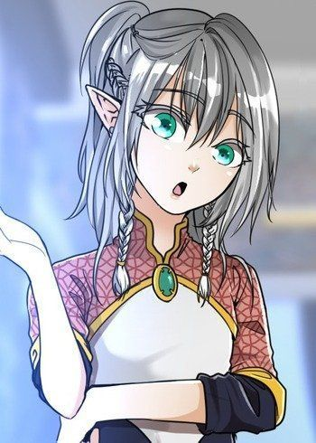
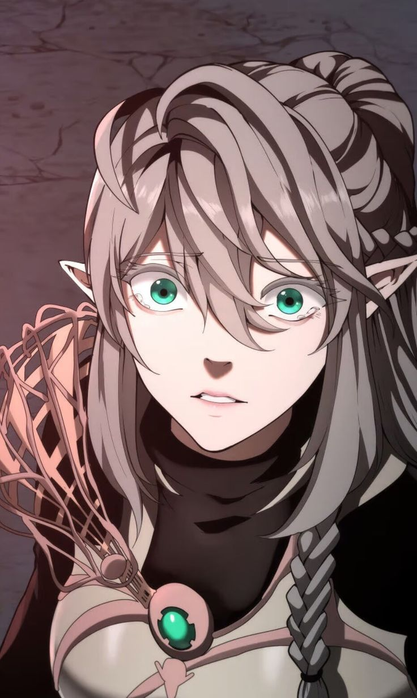
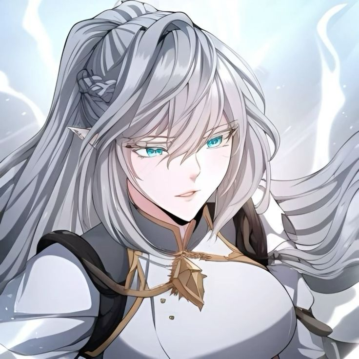

Short Info
Tessia Eralith is a deuteragonist of The Beginning After The End. She is the sole daughter of Alduin and Merial Eralith, former king and queen of Elenoir, and heiress to the throne. Tessia is the childhood friend and love interest of Arthur Leywin. After becoming the apprentice of Cynthia Goodsky, Tessia was appointed as Student Council President of Xyrus Academy. Following the attack on Xyrus Academy, she joined the war against Alacrya.



